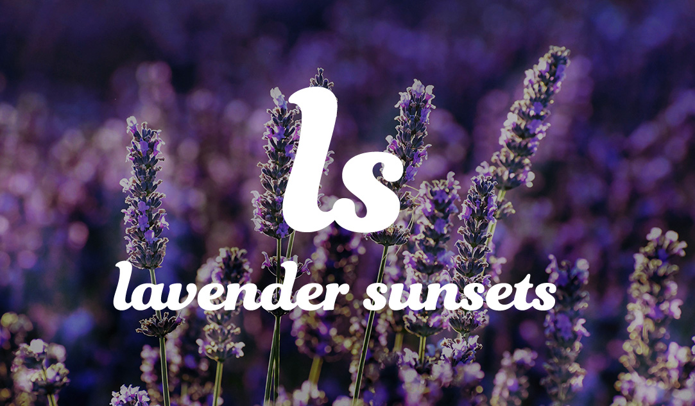
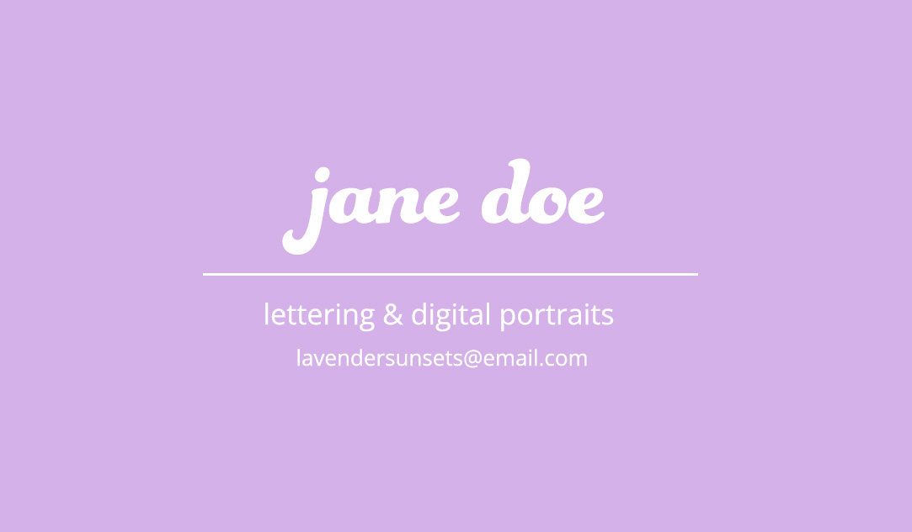
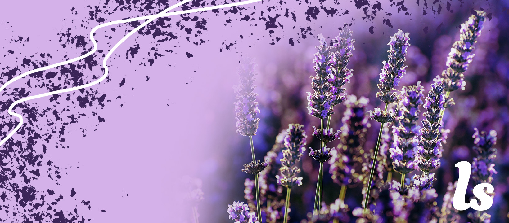

Photoshop Branding Project
The goal of this project was to create a branding package for a company, real or imagined. I went imagined.
The name of the fictional company is what inspired the dominance of lavender within the logo, business card, and social media banner. Additionally, I chose an image that appeared to be taken during the golden hour in the evening for subliminal sunset thoughts.
To keep the images in a size more reasonable for viewing on a computer, I changed the height and width within the img element, though it is not best practice. This was to prevent horizoontal scrolling or excessive vertical scrolling needed to see all components together.
|  |  |
|---|---|
|  | |